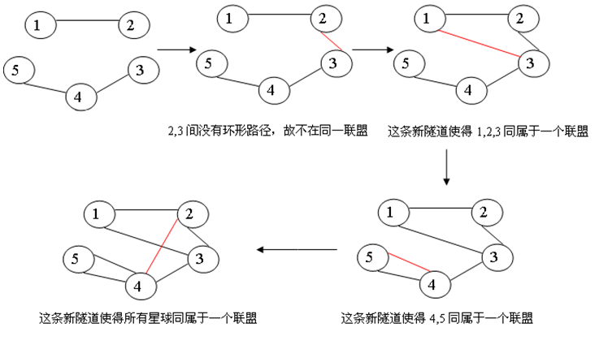

BZPRO
#4998. 星球联盟
内存限制：256 MiB
时间限制：10 Sec
提交
提交记录
讨论
题目描述
在遥远的S星系中一共有N个星球，编号为1…N。其中的一些星球决定组成联盟，以方便相互间的交流。但是，组成
联盟的首要条件就是交通条件。初始时，在这N个星球间有M条太空隧道。每条太空隧道连接两个星球，使得它们能
够相互到达。若两个星球属于同一个联盟，则必须存在一条环形线路经过这两个星球，即两个星球间存在两条没有
公共隧道的路径。为了壮大联盟的队伍，这些星球将建设P条新的太空隧道。这P条新隧道将按顺序依次建成。一条
新轨道建成后，可能会使一些星球属于同一个联盟。你的任务是计算出，在一条新隧道建设完毕后，判断这条新轨
道连接的两个星球是否属于同一个联盟，如果属于同一个联盟就计算出这个联盟中有多少个星球。
输入格式
第1行三个整数N，M和P，分别表示总星球数，初始时太空隧道的数目和即将建设的轨道数目。
第2至第M+1行，每行两个整数，表示初始时的每条太空隧道连接的两个星球编号。
第M+2行至第M+P+1行，每行两个整数，表示新建的太空隧道连接的两个星球编号。
这些太空隧道按照输入的顺序依次建成。
1≤N,M,P≤200000
输出格式
输出共P行。
如果这条新的太空隧道连接的两个星球属于同一个联盟，就输出一个整数，表示这两个星球所在联盟的星球数。
如果这条新的太空隧道连接的两个星球不属于同一个联盟，就输出"No"（不含引号）。
样例
样例输入
5 3 4
1 2
4 3
4 5
2 3
1 3
4 5
2 4
样例输出
No
3
2
5
数据范围与提示
